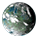

Glacial Crisis
Version
Please help with verifying or updating older sections of this article. At least some were last verified for version 4.3.
This article is for the PC version of Stellaris only.
This article is for the PC version of Stellaris only.
Event chains
Empire event chains
Anomaly event chains
Colony event chains
Primitive civilization event chains
Glacial Crisis is a colony event chain that has a very small chance to trigger 12 years after any colony has been founded on a 
{kind=link}
{kind=link}
{kind=link}
Glacial Crisis
{kind=link}
The latest climate report from [colony name] has come to a concerning conclusion. Inexplicably, the surface temperature on the frozen planet has been rising at an alarming rate.
If we fail to identify the reason for the ecosystem's rapid deterioration, the situation could lead to catastrophic melting of the planet's vast glaciers.
If we fail to identify the reason for the ecosystem's rapid deterioration, the situation could lead to catastrophic melting of the planet's vast glaciers.
Trigger conditions:
|
Mean time to happen:
12 years |
Find out why the planet is heating.
It's nothing to worry about. | |
{kind=link}
{kind=link}
{kind=link}
End of an Ice AgeA new climatic era begins as the last vestiges of [colony name]'s glaciers sink into the ocean. The disappearance of the permafrost has uncovered an expansive underwater realm, filled with untapped resources.
|
Core MeltdownOur attempt to limit our emissions on [colony name] has not yielded promising results. We have been only marginally successful in addressing the ongoing ecological crisis, and geographical lowlands are coming under threat due to the rising sea levels. At present, our population centers remain shielded from immediate impact, but it is almost certain planet-wide meltdown cannot be avoided.
|
Secrets of the PermafrostAs the meltdown of the planet [colony name] continues, a fascinating discovery was made beneath the permafrost. An astonishingly abundant polar reservoir of minerals and rare resources lies waiting, beckoning us with untold wealth and untapped potential.
| ||||||||||||
{kind=link}
{kind=link}
{kind=link}
{kind=link}
{kind=link}
Climate StabilizedWe have reached an environmental breakthrough. The innocuous byproducts generated through the combustion of our fuels harbor an insidious side-effect when coming to contact with [colony name]'s bacterial clouds. We now know that these clouds play a vital role in retaining the planet's natural biorhythm by working as a solar shield. As the bacteria slowly begun to diminish, we inadvertently exacerbated the effect of our emissions. Armed with this newfound knowledge, resolute measures have been swiftly enacted to restore the equilibrium. |
Secrets of the PermafrostAs the meltdown of the planet [colony name] continues, a fascinating discovery was made beneath the permafrost. An astonishingly abundant polar reservoir of minerals and rare resources lies waiting, beckoning us with untold wealth and untapped potential.
| ||||
Unfrozen PathogenA disconcerting development has unfolded at our polar mining station on [fcolony name]. Workers have succumbed to sudden bouts of unconsciousness, necessitating the implementation of a stringent no-pass zone for their safety. Initial investigations suggest the emergence of a dormant virus, awoken as its icy confines were disturbed. The true nature and characteristics of this awakened pathogen remain uncertain, leaving us grappling with a multitude of unanswered questions. The extent of its transmissibility and the potential danger it poses to the people remains undetermined. |
Polar RichesIn the hollowed depths of the polar regions of [colony name], a mining team has made a discovery of monumental proportions. Veiled beneath layers of ice and snow, colossal crystals reminiscent of majestic glaciers were found. These extraordinary formations, forged under immense pressure over untold ages, stand as a testament to the unlimited potential we have yet to uncover.
| ||||
{kind=link}
{kind=link}
{kind=link}
{kind=link}